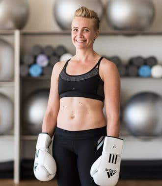
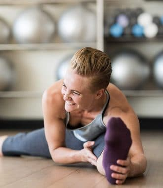
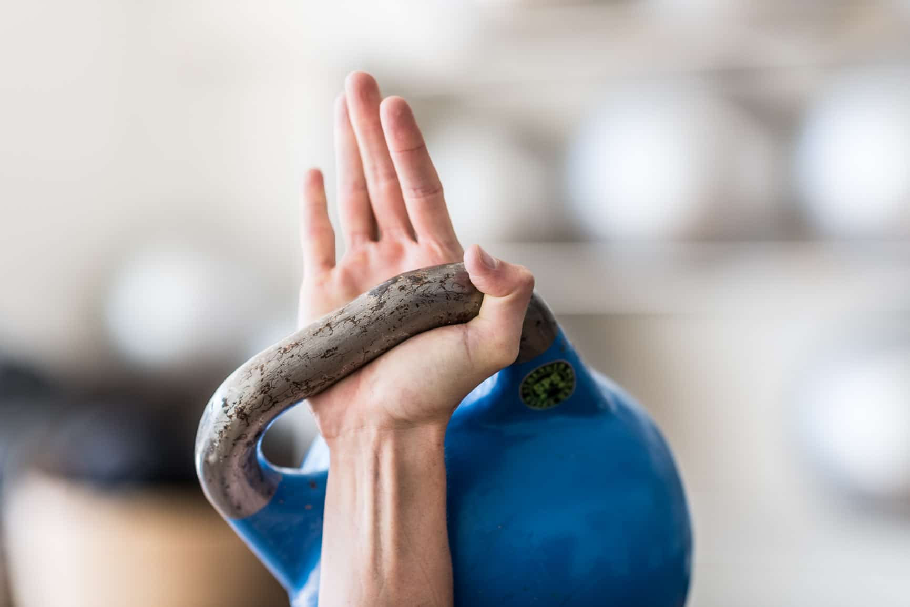
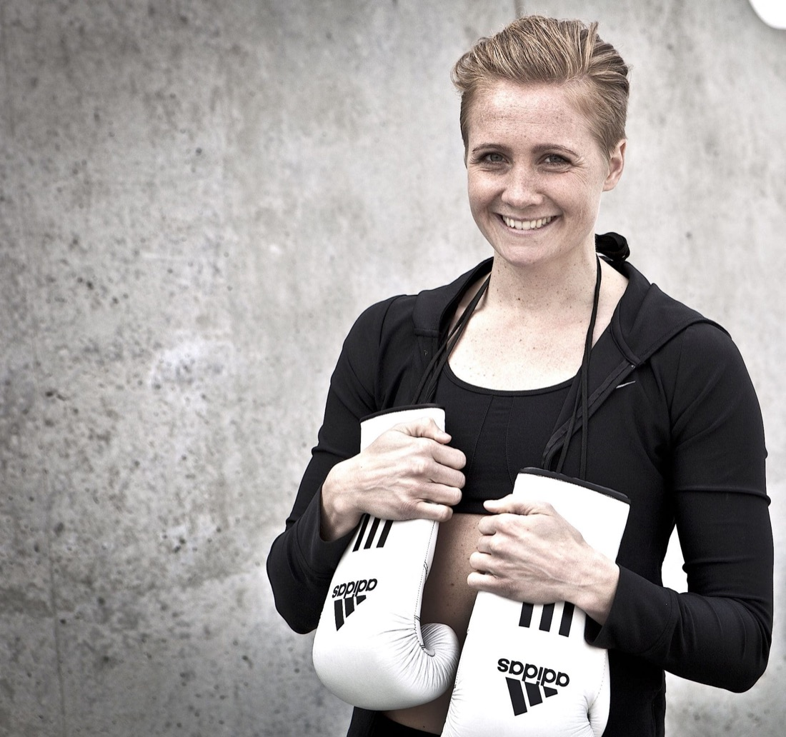

Galleri
Glimt fra arbejdet





En ærlig, nysgerrig og helhedsorienteret tilgang, der vægter balancen mellem performance, trivsel og sundhed – både fysisk og mentalt.
Min mission er at inspirere, udvikle og flytte mennesker – med udgangspunkt i helhed og balance i det fysiske, psykiske, mentale og spirituelle. For kun dér finder du styrken og nøglen til forandring og vækst.
Jeg er født i 1980 i Vejle og vokset op på en gård på landet. Sport og fysisk aktivitet har altid fyldt meget i mit liv. Derudover har jeg altid haft en stor nysgerrighed for, hvordan mennesker fungerer – fysisk, psykisk og spirituelt – og ikke mindst hvordan jeg optimerer mig selv og bliver den bedste udgave af mig.
Jeg har altid bevæget mig i en mandeverden – lige fra jeg som lille spillede fodbold, kørte ræs på cyklen og helst ville se Formel 1 og fodbold på tv. Det har gjort mig ekstra hårdfør og lært mig at se alt som en udfordring og en mulighed for at lære og udvikle mig.
Leg, glæde og nysgerrighed er ikke noget, vi lærer – det er noget, vi glemmer.
Det har altid været vigtigt for mig at have en fin balance mellem det maskuline og feminine. I dag ved jeg, at jeg er bedst og mest powerful, når jeg har rum og ro til fordybelse og stilhed – samtidig med at jeg er udadvendt, social, maskulin og stærk. Den balance er for mig livsnødvendig.
Jeg elsker det direkte, rene og ærlige. Jeg kan ikke lade som om, og derfor har det altid været naturligt for mig – med stor nysgerrighed – at kigge på det, der er svært, også selvom det kan gøre ondt. Jeg ønsker at opnå det fulde potentiale på alle plan, og så er jeg klar til at gøre det, der skal til.
Kroppen fortæller os alt, hvad den behøver – men det kan være nødvendigt at være stille for at høre, hvad der bliver sagt.
— Vinnie Davida Søndergaard
Jeg siger tingene, som de er – med respekt og omsorg. Ægte udvikling kræver ærlighed om, hvor du står i dag, og hvor du gerne vil hen.
Jeg stiller spørgsmål og lytter, før jeg konkluderer. Hvert menneske og hver organisation er forskellig, så jeg tilrettelægger altid efter dit udgangspunkt.
Krop og sind, performance og trivsel, individ og fællesskab. Jeg arbejder med balancen mellem det hele – fordi det er der, den varige styrke ligger.
Jeg boksede som amatør fra 1998 til 2007. Samme år blev jeg professionel, og i 2008 flyttede jeg til København for at optimere min professionelle karriere. I januar 2011 indstillede jeg karrieren – som regerende Europamester og i top 10 på verdensranglisten.
Jeg ramte en periode i dansk professionel boksning med stilstand og ringe forhold: få stævner, sjælden tv-dækning og næsten ingen sponsorer. I lange perioder var jeg min egen manager udenfor ringen og kæmpede for at holde økonomien kørende, mens jeg boksede mod nogle af verdens bedste. Det har givet mig en masse indsigt og sejre på vejen – for mig har det været en livslang uddannelse.
Alle kampene, alle glæderne, blodet, sveden og tårerne må nødvendigvis komme andre til gode. Det er den indsigt, jeg i dag bruger, når jeg arbejder med andre mennesker.
Det kræver ærlighed og mod at lægge en plan og tage det første skridt. Dernæst handler det om at have modet til at fejle – og modet til at vinde.
Behandling der løsner op og fremskynder restitution. Rolig, grundig kropsbehandling i klinikken på Østerbro.
Book tid →TRX og funktionel træning under åben himmel, lige ved vandet. Styrke, puls, balance og teknik – 12 pladser pr. hold.
Tilmeld dig nu →Performance, trivsel og selvledelse i organisationen — huscoach, mentoring, workshops og MiBo Gold.
Lad os komme i gang →



"Jeg har trænet med Vinnie i næsten 4 år. Det er den bedste og mest udfordrende træning jeg har lavet, siden jeg stoppede med fodbold. Siden vi startede, er jeg blevet stærkere og meget mere stabil."
 Peter SchmeichelTidl. professionel fodboldmålmand
Peter SchmeichelTidl. professionel fodboldmålmand"Vinnie er super sød og inspirerende, og så har hun forståelse for, hvad det vil sige at dyrke en individuel sport. Hvis jeg kunne ha' min egen fysiske træner hver dag, skulle det helt klart være Vinnie."
 Ida KrauseJunior elite tennisspiller
Ida KrauseJunior elite tennisspiller"Det har været en kæmpe succes. Vinnie bruger mange forskellige træningsmetoder, som er utrolig effektive og kan bruges af alle i alle aldre. Jeg kan varmt anbefale Vinnie Søndergaard, hvis du vil udfordres på alle områder – både fysisk og mentalt."
"Efter et forløb på snart to måneder har hun formået at løsne op og fremskynde restitutionsprocessen, så jeg har haft mulighed for at være konkurrenceklar til sæsonens sidste konkurrencer. Flotte anbefalinger herfra!"
Uanset om det handler om klinik, træning eller din organisation, så starter det med en samtale. Skriv eller ring – så finder vi ud af det sammen.